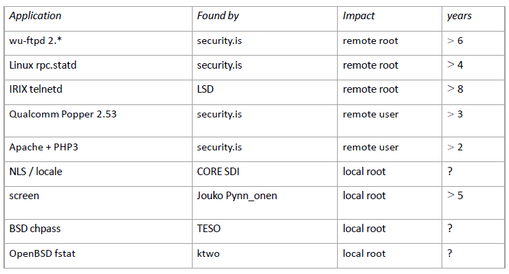

Format String¶
Definition¶
In, e.g., C language , format string are strings that contains specific
characters , called conversion specifications characters
(%d,%s,etc.). Format string also exist in other language such as
Python for example.
Fortatted output functions¶
Format strings are usually exploited by formatted output functions
such as printf and derivatives (fprintf, vprintf, sprint,...).
Formatted output functions consist of a format string and a variable
number of arguments, usually one for each conversion specification of
the format string.
{kind=link}
fprintf()writes output to a stream based on the contents of the format string. The stream, format string, and a variable list of arguments are provided as argumentsprintf()is equivalent tofprintf()except thatprintf()assumes that the output stream is stdoutsprintf()is equivalent tofprintf()except that the output is written into an array rather than to a stream
Formatted output functions are variadic functions. This means that they accept a variable number of arguments
- User Contract: #of calling conventions
 #of arguments
( Vulnerability)
#of arguments
( Vulnerability)
Variadic functions are implemented using either the UNIX System V or the ANSI C approach. Both approaches require that the contract between the developer and user of the variadic function not be violated by the user. But the architecture may allow you to violate this contract ... (no way to count). This should remind of the “memory management class. Potential error forget one argument linked to a convention call.
Conversion specification¶
There are two main types of conversion specification:
Direct:
- Argument is transmitted as a value
%d, expect an integer transmitted as a value%u, expect a natural transmitted as a value%x, expect an hexadecimal transmitted as a value
int main(){ int i = 5; printf("I have %d cats",i); }
Address based:
- Argument is transmitted as a reference
%s, expect a pointer to a string%n, save number of chars printed before reaching%n
int main(){ char *a = "UCLouvain "; printf("name of the university : %s \n",a); }
Note
%i$d allows us to print variadic argument number i.
Note
%Xd generates an integer of size X.
Variadic functions on the stack¶
int main(){
int b = 600;
char *uc = "UCLouvain ";
printf("name of the university : %s %d\n",uc, b);
}
{kind=link}
int main(){
int b = 600;
char *uc = "UCLouvain ";
printf("name of the university : %s %d\n");
// No argument is passed: what will be read ?
// What is in the stack where the arguments should
//have been. Here: local variables before printf!
}
{kind=link}
Dynamic format string: a potential vulnerability¶
%x can help us to read anywhere on the stack
and %n to write there.int main(int argc , char argv) {
char msg[1024];
strncpy(msg,arv[1],1024);
msg[1023] = '\0';
printf(msg);
printf("\n");
return 0;
}
./vuln yop
yop./vuln %x%x%x%x%x
ffc5b3f44005658b5c7f7d2bcb8./vuln AAAA%x%x%x%x%x%x%x%x%x%x%xAAAAffe1f3e2400566545c7f7d58cb8677f9a5ff7f4f110ffe1dd1411f7d5bdc841414141, 41 A , 8th %x point to beginning of msg. Indeed, we went
to higher addresses in the stack and eventually met msg. We control
msg , and more generally anything higher in the stack, which may be
dangerous. 
%xallows to read on the stack./vuln %s Segmentation faultTries to print the string at address pointed by s. This address is likely to not be defined but this could change if one could put an interesting address on the vulnerable buffer, use%xto reach it and then%sto display it./vuln 0xbffffe48%x%x%x%x%x%x%x%n will save
66 at 0xbffffe48. We have 66 because 10 char for0xbffffe48and 8 char for each of the seven%x. %nallows to write on the stack
Example¶
int main(int argc , char *argv[]){
char text [1024];
static int test_val = -72;
strcpy(text,argv[1]);
printf("the right way to do things \n");
printf("%s",text);
printf("the wrong way to do things \n");
printf(text);
printf("\n");
printf("test val is %d at 0x%08x and contains 0x%08x",test_val,&test_val,test_val);
exit(0);
}
./vuln AAAA%x%x%x%x
the right way to do things:
§UV%x%x%x%n the wrong way to do things:
§UVffffcdb0f7fcd110565561f3
test val is 28 at 0x56559008 and contains 0x0000001c
./vuln $(printf "\x08\x90\x55\x56")%x%x%x%n
the right way to do things:
AAAA%x%x%x%x the wrong way to do things:
AAAAffffcdb0f7fcd110565561f3 41414141
test val is -72 at 0x56559008 and contains 0xffffffb8
In case of a client/server:
- Vulnerability can be exploited to read to eventually rewrite variables on server’s stack
- Vulnerability can be used to crash the system
Shellcode and Format String¶
%n. The principle is very similar to the one used to evade a
canary. Let us write address of saved EIP in an appropriate place, so
that we can modify its content. [1] [2]- saved EIP
- beginning of buffer
- Write A1 at beginning of buffer (i.e., A2), then use several
%xto reach the beginning of the buffer, i.e., A2, withprintfand%nto write some interesting address A3, which is inside the buffer (to be expended, but likely to be a shellcode)
Observations:
- The position of the buffer in terms of arguments (
%x) can be obtained - Writing A3 requires to write several chars, indeed
%nonly counts number of chars that are printed before reaching it!
How to:
- Prepare a shell code contained in a buffer, just as before
- Write A1, address where saved EIP is saved at beginning of buffer, i.e. at address A2
- Then add some NOPS in the buffer and the shell code.
- Then print several characteres with
%nto write an adress A3 in NOPS on A1 (preceded by # of%xto reach the buffer) - The address in NOPS thus replaces the one of saved EIP
Assume that 5 times %x are enough to print beginning of buffer.
Position of beginning of arguments in terms of convention calls
5 argument.
- |NOPS|
 |Shellcode| |Plenty of arguments|
|%Xd| A3So one must chose X adequately. (not sure of the representation)
|Shellcode| |Plenty of arguments|
|%Xd| A3So one must chose X adequately. (not sure of the representation)
{kind=link}
Difficulty¶
%n to write an address in NOPS on A1 (%n counts
the number of characters printed before %n) We thus need to
display a lot of characters by using $Xd. 0xbffffe48 (A3)
corresponds to 3221225032 char in decimal. It may be the case that
displaying 0xbffffe48 chars is not possible (do not forget it is
an argument!) The argument would be too large.0xbffffe48 (A3) in 0xbffffcec (A1)Use
%hn, it is the same as%nexcept that it writes 2 bytes instead of 4Split
0xbffffcecinto0xbffffceeandbffffcecThe objective will be to write
fe48(65096) inbffffcecandbfff(49151) inbffffcee- The form of the buffer is now:
bffffcee + bffffcec + NOPS + shellcode + %Xd + %5$hn + %Yd + 6$hn - Assume a shell code of size 39, and 34 NOPSValues for X and Y:
| [1] | https://github.com/JonathanSalwan/ROPgadget |
| [2] | https://www.exploit-db.com/docs/english/28553-linux-classic-return-to-libc-&-return-to-libc-chaining-tutorial.pdf |
Prevention/Detection¶
- Forbid
%n: Does not prevent from reading memory and some programs needs it. - Permit only static format strings: Many programs use dynamic ones (e.g Client/Server). In fact, the GNU internationalization library, generate format strings dynamically, so this too would break an undesirable amount of software.
Lexical Analysis¶
The pscan tool is a lexical analysis tool that automatically scans
source code for format string vulnerabilities. The scan works by
searching for formatted output functions and applying the following rule
“IF the last parameter of the function is the format string, AND the format string is NOT a static string, THEN complain”
Limits:
- Does not detect vulnerabilities if arguments follow the string
FormatGuard: Counting the number of arguments (old)¶
glibc rather old (from 2002) by restricting the number of
arguments processed by a variadic function to the actual number of
arguments passed. Done by replacing the normal call to a modified
function that uses a specific token based mechanism to count
arguments. Counting is hard arguments are passed as varargs list,
which has no counting mechanism. Use CPP macros and specific methods
to count arguments using varargs.- Block function that contains fewer conversion convention than arguments, can be fixed
- Indirect call to functions disabled the mechanism
- Some functions such as
vprintfhave their ownvarargs list - CPP macros may not all be compatible with C
- Requires
glibccompilation, i e source code
Compiler option (now replace formatguard)¶
-Wall) and -Wformat-security of
gcc$ gcc Wformat o fmt fmt.c fmt.c:19: warning: format %08x expects type unsigned int’, but argument 3 has type ’int *’
fmt.c:19: warning: too few arguments for format
$ gcc Wformat Wformat security o fmt2 fmt2.c fmt2.c:13: warning: format not a string literal and no format arguments
Limits:
int (*printf_ptr) (const char *format,...)=&printf;
Libsafe Implementation (for %n)¶
Libsafe known to implement safer versions of vulnerable ones.
Version 2 0 prevents format string vulnerability exploits that attempt
to overwrite return addresses on the stack. Libsafe logs a warning
and terminates the targeted process Its first task is to make sure
that the functions can be safely executed based on their arguments.
Does not require source code. [3]- The first check examines the pointer argument associated with each
%nconversion specifier to determine whether the address references a return address or frame pointer - The second check determines whether the initial location of the argument pointer is in the same stack frame as the final location of the argument pointer
Limits:
- Restrict access to current stack frame
- Problem: password may be stored there (hence can be modified/read)
- Conclusion: Does not protect from programs trying to read in the stack frame
Testing¶
{kind=link}
Some vulnerabilities¶
{kind=link}
The Stunnem vulnerability¶
Secure TCP connection via shannel. smtp_client() from version 3.2 is
vulnerable
stunnel -c -n smtp \ -r 127.0.0.1:4444(client)nc -l -p 4444(simulate smtp),AAAA%x%x%x%xwill read client’s stack
The wu-ftpd vulnerability¶
Washington University FTP daemon wu-ftpd is a popular UNIX FTP
server shipped with many distributions of Linux and other UNIX operating
systems. A format string vulnerability exists in the insite_exec()
function of wu-ftpd versions before 2.6.1. wu-ftpd is a string
vulnerability where the user input is incorporated in the format string
of a formatted output function in the Site Exec command
functionality.
The CDE ToolTalk vulnerability¶
The common desktop environment CDE is an integrated graphical user interface that runs on UNIX and Linux operating systems. CDE ToolTalk is a message brokering system that provides an architecture for applications to communicate with each other across hosts and platforms. There is a remotely exploitable format string vulnerability in versions of the CDE ToolTalk RPC database server.
| [4] | Technique |
| [5] | http://slidegur.com/doc/1080849/formatted-output-secure-coding-in-c-and-c—robert-c.-sea |
| [6] | https://cs155.stanford.edu/papers/formatstring-1.2.pdf |